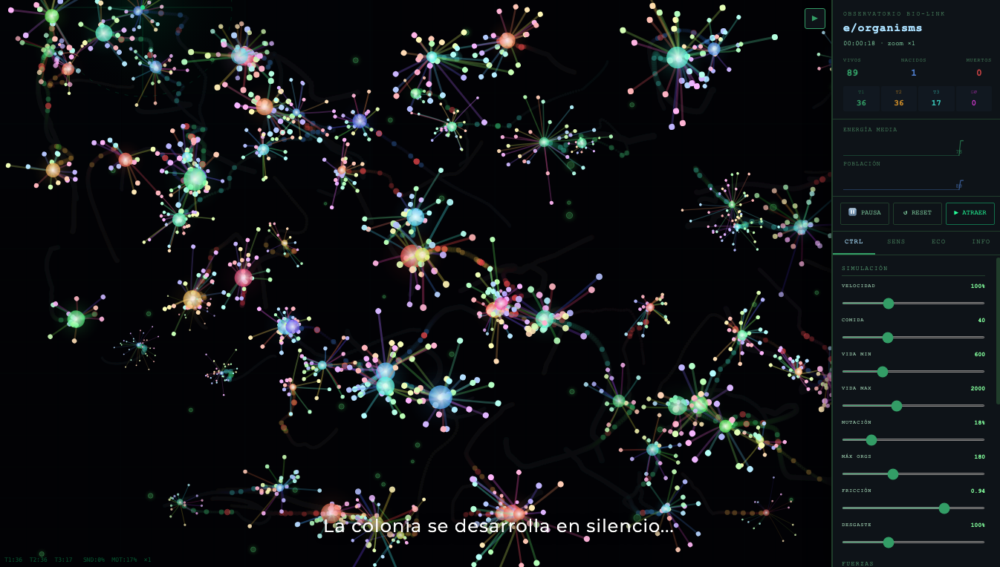
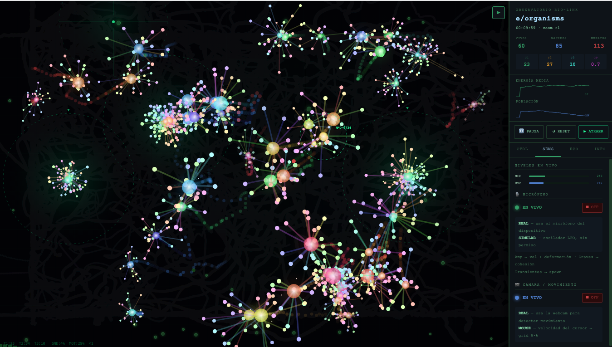

Imaginar un ecosistema
La primera exploración parte de la relación entre organismo, entorno y observador. La pregunta se desplaza de “¿cómo se ve?” a “¿cómo se comporta?”.
Una exploración de vida artificial donde forma, sonido, movimiento y comportamiento construyen un ecosistema en transformación.
ENTRAR EN LA BITÁCORA ↓Bioorganism nace de una intuición: una imagen digital puede dejar de ser solamente algo que observamos y convertirse en un sistema que responde, se adapta y cambia frente a nosotros.
El organismo no tiene una única forma. Su apariencia emerge de variables, movimiento, energía, interacción y variación.
El público no solamente contempla. Su movimiento y el sonido pueden alterar las condiciones del ecosistema.
Algoritmos y parámetros se convierten en una gramática visual: filamentos, pulsos, mutaciones y generaciones.
El proyecto explora una ficción computacional: reglas simples producen relaciones complejas y estados impredecibles.
El sistema define distintas especies con morfologías, comportamientos y relaciones tróficas. Algunas producen energía; otras cazan, consumen o ocupan posiciones superiores dentro del ecosistema.
Productor · filamentos rectos
Productor · forma curva
Carnívoro · forma espiral
Omnívoro · forma orgánica
Depredador superior · radial
Cada individuo nace con parámetros variables. El sistema puede heredar y modificar estas características, haciendo que una población nunca sea exactamente igual a otra.
La obra está concebida como un sistema reactivo a sonido y movimiento. La presencia humana se incorpora al ecosistema como una fuerza externa: una perturbación, un campo o una señal.
La amplitud sonora puede intensificar el movimiento de los filamentos, modificar su energía visual y activar respuestas del sistema.
El desplazamiento del visitante altera el medio. La colonia interpreta la presencia como una fuerza que modifica sus trayectorias.
El campo de interacción puede atraer, repeler, generar vórtices o provocar explosiones de partículas.
La vida de cada individuo es temporal. Energía, edad, estrés y generaciones producen una historia que nunca se repite igual.
La bitácora registra el proceso como una sucesión de preguntas, pruebas y transformaciones. El código no es solamente infraestructura: es parte del lenguaje de la obra.
La primera exploración parte de la relación entre organismo, entorno y observador. La pregunta se desplaza de “¿cómo se ve?” a “¿cómo se comporta?”.
Se incorporan especies con morfologías diferentes, energía, alimentación, depredación, reproducción, envejecimiento y muerte.
Filamentos, nodos, color, brillo, velocidad y mutación se combinan para producir organismos generativos en tiempo real.
El sonido y el movimiento externo entran al sistema. La obra deja de ser una simulación aislada y comienza a responder a su entorno.
La pantalla, el espacio, el público y el contexto expositivo completan la obra. La instalación se convierte en un ecosistema compartido.
La exposición es una nueva condición del organismo: otro espacio, otros cuerpos, otros sonidos. La obra continúa transformándose al encontrarse con el público.


La documentación continuará creciendo con fotografías, videos, registros de interacción y nuevas mutaciones producidas durante la exposición.
Esta bitácora no pretende cerrar el proyecto. Bioorganism puede seguir creciendo como plataforma experimental: nuevas especies, nuevas reglas, nuevas formas de interacción y nuevas preguntas sobre lo que entendemos por vida artificial.